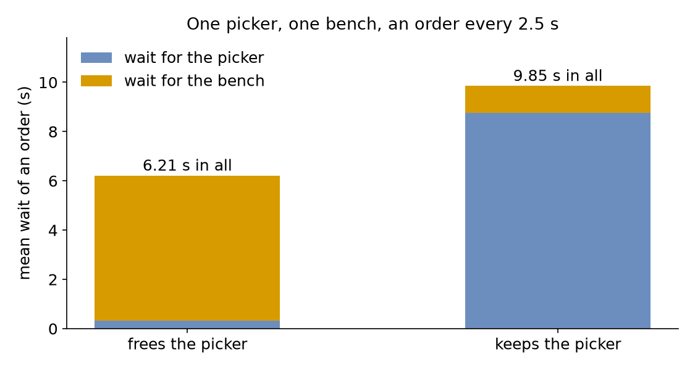

Competing Resources
The shop now picks each order from the shelves before packing it. One picker fetches the order in a second and carries it to the one packing bench, where packing takes 2 seconds on average. The picker could put the order down by the bench and go back for the next one, or stay with it until the bench is free, so the order is never left unattended. This page asks: what does holding one resource while waiting for another cost? It compares the two over an hour, with an order every 2.5 seconds.
What You Add
A second resource, the bench, and a handoff: the picking task keeps the picker for the packing task, which gives it back once the order is on the bench.
Hold One While Waiting for Another
In SimPy a process holds a resource for as long as its request is granted and not released, and it can ask for a second resource while it holds the first: nested with blocks. A desflow task does the same in two ways. It can list several resources, resource: [picker, bench], and hold them all while it works; or it can hand a unit to the next task of its flow with keep, and that task gives it back once it starts:
| docs/snippets/yaml/competing_resources.yaml:handoff | |
|---|---|
Remove keep: [picker] to run it without the handoff: pick_order then gives the picker back when it finishes, as every task does.
Without keep, pick_order gives the picker back when it finishes, as every task does.
The picker's request is not in a with block, because the next process releases it.
While the order waits for the bench it holds the picker: a partial holding. Nothing grants the picker and the bench together; each is acquired in turn, and the units already held stay held while the task waits for the next. The picker's busy share counts that waiting time:
One Order of Acquisition
Two orders that each hold one resource and wait for the other wait for ever: a deadlock. If a picking task held the picker and waited for the bench while a wrapping task held the bench and waited for the picker, both could stop. desflow prevents it by refusing such a model when it is built: every task, handoffs included, must acquire shared resources in one order, and the error names the two tasks that disagree. Here every order goes picker first, then bench.
Result
What does holding the picker while waiting for the bench cost? When the picker frees itself, orders wait 0.32 seconds for it and 5.89 seconds for the bench, 6.21 seconds in all. When it stays with the order, the wait moves to the picker, 8.77 seconds, and orders wait only 1.09 seconds for the bench, 9.85 seconds in all; the picker is busy 82.7% of the time instead of 39.8%, most of it standing by the bench:

The Builder and Low-level scripts print both:
Why It Works
The bench is the bottleneck: it is busy 80% of the time. When the picker waits at the bench, its own time is spent on the bench's queue, so the picker becomes a second bottleneck and the next order waits for it. Releasing a resource as soon as it is no longer needed keeps the waits where the work is. Queueing Basics explains utilisation. Several Resources describes several resources, handoffs and the order rule.
Full Files
Full files
| docs/snippets/tutorials/competing_resources_low_level.py | |
|---|---|
1 2 3 4 5 6 7 8 9 10 11 12 13 14 15 16 17 18 19 20 21 22 23 24 25 26 27 28 29 30 31 32 33 34 35 36 37 38 39 40 41 42 43 44 45 46 47 48 49 50 51 52 53 54 55 56 57 58 59 60 61 62 63 64 65 66 67 68 69 70 71 72 73 74 75 76 77 78 79 80 81 82 83 84 85 86 87 88 89 90 91 92 93 94 95 96 97 98 99 100 101 102 103 104 105 106 107 108 109 110 111 112 113 114 115 116 117 118 119 120 121 122 123 124 125 126 127 128 129 130 131 132 133 134 135 | |
Next, Filtered Inventory asks which waiting order can use the item that arrives.